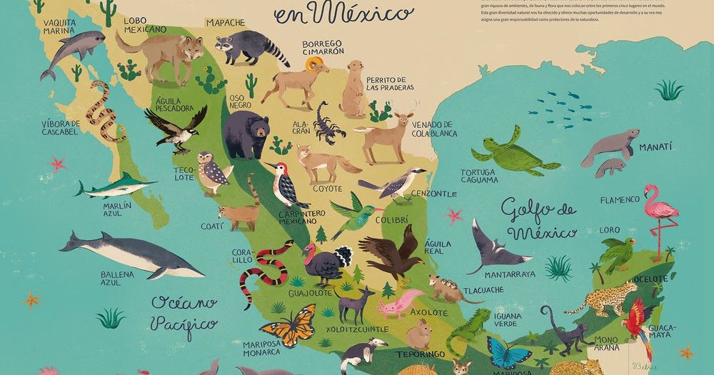

 Los animales en México, junto con las paradisíacas playas o las ruinas mayas, conforman uno de los tesoros más valiosos del país. Es así, que la fauna de México se caracteriza por ofrecer especies únicas en el mundo y 100% características de este territorio. Aves rapaces, reptiles, grandes cetáceos y numerosas especies de mamíferos son los animales mexicanos responsables de que la fauna de México se considere un ecosistema de gran biodiversidad, llegando a albergar el 10% de las especies reconocidas a nivel mundial. El clima tropical y los miles de kilómetros de selva salvaje, hacen de México un lugar idóneo para la supervivencia de los animales. Y es que se estima que más de 200.000 especies diferentes habitan estas tierras, siendo prioritarios en este orden: los reptiles, los anfibios y los mamíferos.